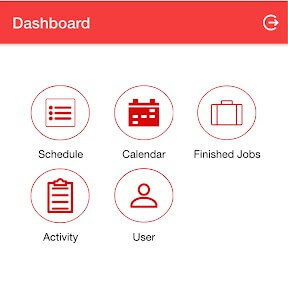

Vinh Thanh Bakery (Night Job)
Tech-stack: react-native, react-js, redux, bootstrap, jquery, firebase, redis, postgresql, golang
SAP Experience (Day Job)
Pioneer of applying Selenium Webdriver js to increase code coverage to improve quality and test running time performance.
SQL Parser
Worked closely with German colleagues and contributed to a library which uses AST-Tree. It is an abstract syxtax tree, it represents for the syntatic structure of SQL and writtern in JS. The SQL syntax is parsed into the tree structure providing the ability to highlight, format the SQL query, do auto suggestion, syntax validation.
The sqlparser-js is used widely in company's products, particularly one has an editor console such as SAP Hana Runtime Tools - Web IDE, SAP Hana Cockpit.
Workload Analyzer
Analyzing workloads from an SAP HANA database with the workload analyzer can help you identify the root cause of performance issues.
The workload analyzer is a tool that allows you to analyze the workload occurring in a system
- The workload analyzer based on thread samples. It is a solution for analyzing database performance using thread samples. This version uses thread samples data to analyze the performance. It provides a workload analysis using different KPIs, and it offers the following information sets: On the upper part of the screen, the chart displays the system resource usage. The chart displays both a real-time and a historical analysis. The information displayed on the grey background represents the historical analysis of the workload. Both analysis types are based on the sampling data. However, the historical analysis contains only aggregated data. On the lower part of the screen, the main analysis page offers the following four sections: Top SQL Statements, Background Jobs, Timeline, Threads.
In conclusion, the workload analyzer gives you an overview of the system's health at a glance. Moreover, the tool helps you identify the root cause of performance issues either by a real-time analysis or by reviewing historical data.

- The workload analyzer based on engine instrumentation. It is a solution for analyzing database performances based on the workload captured with the capture and replay tool. This version of the tool performs the analysis using the captured data containing all the statistics of the query execution. Furthermore, it allows a deeper analysis with a full set of execution details. It offers you two analysis types, on the upper part of the screen, the chart displays the system resource usage, on the lower part of the screen, three sections are displayed with further analysis such as capture information, top SQL statements, timeline.
In contrast to the workload analyzer based on thread samples, using this tool requires to capture the workload before analyzing the performance. Capturing all the workload by default is not recommended because it introduces an overhead to system performance.
DIY (Diagnose It Yourself)
DIY is an internal tool (yet for external customers) that allows SAP colleagues to manage tickets from outside customers more efficiently. It is mostly used by SAP customer support team located in more than 10 countries. Tickets are categorized into five types: symptom, check, analysis, report action, resolution action. DIY is also intergrated with SAP Notes, SAP customer incicents, SAP BCP systems. DIY gives users the ability to discover the large amount of information effortlessly by providing the visualized tree views with many supported interactions with nodes. DIY aims to acquire all the related-information to become the central knowledge-based platform. In the latest version, it is using by more than 1000 internal users.
- Tidy Tree View

- Radial Tree View
Korea Biz Trip
An has a biz trip to Korea to join a product workshop. The workshop lasts for a week. The participants are UX leads, product manager, project manager, product architecture and developers mostly from European, Asean countries and USA. The agenda is about product development, roadmap, planning, strategy, decision making, collaboration model, restropective meeting, dshop local meetings.
SAP Dshop (Innovation Space)
An leads and form the local Dshop Vietnam team for more than a year volunterry. He represents for local team to have monthly virtual meeting discussion with global Dshop leaders from 30+ countries. He also develops and manages the local Dshop Jam Page.
(Dshop is a SAP global program, a place where employees can experience the work in a different way every day. It is also a place to discover new technologies, where you can innovate and stimulate environment, where you can experience new solution related to hard and software, where you can think outside the box and let your brain evil. The focused technologies are ranged from IoT electronics, 3d printing, robotics, virtual reality to machine learning, artificial intelligent and blockchain.)
His responsibility involves in planning operation strategies, goals execution, organizing planned events, conducting workshops, sending emails to all company colleagues, designing event posters and email template, working with team to learn and experiment merging technolgies. He is a design thinking passionista and practitioner, user-centric influencer in the company.


Devx - Winner - Connected Agriculture
Following activities in Dshop, he joined the DevX competition and won the 2nd price.
The platform is powered by SAP Cloud Platform (IoT device management service)

iProfoto Experience (Night Job)
The hybrid mobile application helps automate business process, cut down paperwork, increase productivity, reduce loss in cost. The platform also supports web interface so administrators can manage tasks easier. Crucially, it helps store all the data in a central database server that allows the SME can be ready for the Industry 4.0
